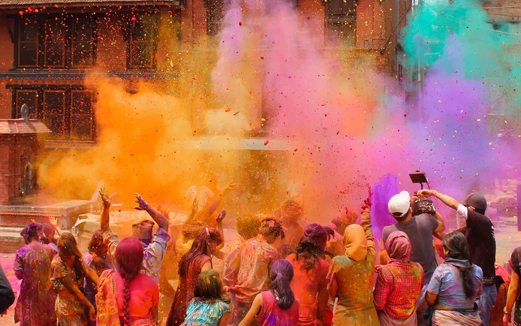

Bhairahawa is a multicultural city in Nepal, and several festivals are celebrated here throughout the year. Some of the major festivals celebrated in Bhairahawa are:
Dashain: Dashain is the biggest and most important festival in Nepal, and it is celebrated in Bhairahawa with great enthusiasm. It usually falls in September or October and lasts for 15 days. During this festival, people worship the goddess Durga and receive blessings from elders. It is also a time for family gatherings, feasting, and exchanging gifts.
Tihar: Tihar, also known as Diwali, is another major festival celebrated in Bhairahawa. It usually falls in October or November and lasts for five days. During this festival, people worship different animals and objects such as cows, crows, and the goddess of wealth. The festival is also known for lighting of lamps and decoration of homes with colorful lights.
Buddha Jayanti: Buddha Jayanti is a festival that commemorates the birth, enlightenment, and death of Lord Buddha, who was born in Lumbini, near Bhairahawa. It is celebrated in April or May with processions, prayer meetings, and teachings of Lord Buddha.

Holi: Holi is a colorful festival celebrated in Bhairahawa in March, which marks the victory of good over evil. During the festival, people throw colored powder and water at each other, dance to music, and enjoy traditional food and sweets.
Chhath Puja: Chhath Puja is a Hindu festival celebrated in November to honor the sun god and thank him for sustaining life on earth. During this festival, people take a holy bath, offer prayers to the sun, and fast for the entire day.
These are just a few examples of festivals celebrated in Bhairahawa. The city also celebrates other festivals such as Teej, Janai Purnima, and New Year's Day according to different cultural and religious traditions.
In conclusion, Bhairahawa is a beautiful city in Nepal, which is known for its rich culture, heritage, and natural beauty. The city has many attractions for tourists, including historical sites, temples, monasteries, and natural parks. The city's proximity to the Indian border makes it a convenient entry point for travelers visiting Nepal from India.
Apart from tourism, Bhairahawa is also an important economic hub in Nepal. The city has a thriving business community, and it is home to many industries, including textile, cement, and agriculture. The city's location near the Indian border has also facilitated cross-border trade and commerce, contributing to the region's economic growth.
In recent years, Bhairahawa has seen significant infrastructure development, including the construction of the Gautam Buddha Airport, which has improved air connectivity to the city. The city's road network has also been improved, making it easier for tourists and locals to travel to and from the city.
Despite the progress made, Bhairahawa faces some challenges. Like many cities in Nepal, Bhairahawa struggles with issues such as air pollution, waste management, and traffic congestion. The city authorities have implemented measures to address these issues, including the use of electric vehicles and the construction of waste management facilities.